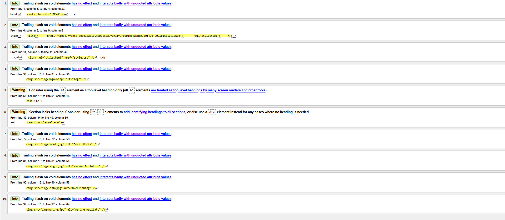
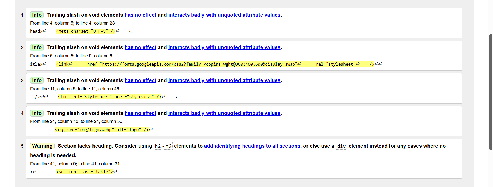
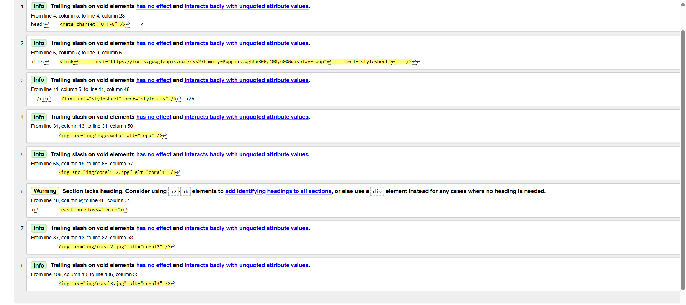

Sethum Thisak Munasinghe, Student 2
Home Page validation report

Back to Page Editor page
Page Editor ST2
Table Page validation report

Back to Page Editor page
Page Editor ST2
Content Page validation report

Back to Page Editor page
Page Editor ST2
Go top